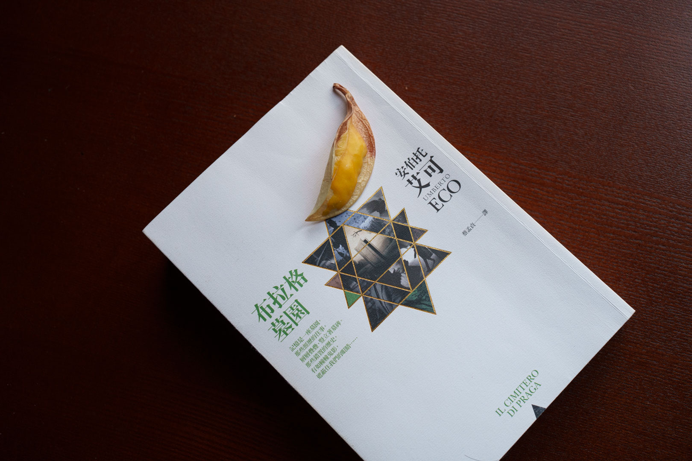

WRITING
文学、历史、艺术与人物。书页上的发现，在这里沉淀为可以重读的笔记。
2026年7月 · 读书
从断头台前的两次牺牲出发，重看法国大革命中的政治狂热、群众暴力，以及不能被宏大理想取消的人性界线。
2018—2025 · 诗词
二十六首旧体诗词，写风物、行旅与世事感怀，并以八幅摄影作品相伴。

艾可带我们回到灾难的“代码编写阶段”：一份伪造文本，是如何把旧有的偏见缝合成改变历史的谎言。